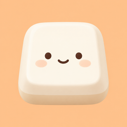

原「星星鍵盤」・下載與安裝說明
自己做的手機鍵盤：注音（不打聲調也能出字）、拼音、手寫、英文、韓文、日文、表符、顏文字、花式文字、快捷片語、剪貼簿、翻譯、可愛主題和自己的背景照片。還沒上架商店，照下面的步驟自己安裝。
iPhone 沒上架的 App 要用電腦裝，第一次大約 15 分鐘。用免費 Apple ID 裝的 App 每 7 天要用電腦重裝一次（資料不會不見）。
安裝工具會要你輸入 Apple ID 和密碼（它要用你的帳號幫 App 簽名）。不放心的話，可以另外註冊一個專門裝 App 用的 Apple ID。
安裝檔會直接下載到電腦。這裡只提供已完成打包的版本；新版完成後重新開啟此頁即可。舊版 App 名稱可能仍顯示「星星鍵盤」。
免費 Apple ID 裝的 App 只能用 7 天，到期時鍵盤會叫不出來、App 一打開就閃退。這時候照上面「用電腦裝進 iPhone」再裝一次就好，不用刪掉舊的，設定、照片、剪貼簿紀錄、自製表符都會保留。
有新版時鍵盤上方會提醒你。裝新版也是一樣的步驟：到下載頁拿最新的 StarKeyboard.ipa，用 Sideloadly 直接裝，會蓋過舊版。重裝會重新算 7 天，所以順便更新最划算。
開發者模式和「信任」通常只要設定一次。如果重裝後又打不開，再去「VPN 與裝置管理」按一次信任。
Android 不用電腦，用手機直接下載安裝，大約 5 分鐘，也不用每 7 天重裝。
目前的測試版每一版的簽名都不一樣，不能直接蓋過舊版，會顯示「未安裝應用程式」或「套件與現有套件衝突」。請先移除舊版：長按桌面上的「糯糯鍵盤」圖示 › 解除安裝（或 設定 › 應用程式 › 糯糯鍵盤 › 解除安裝）。移除後設定和背景照片會不見，裝好要重新設定。
第一次安裝的人跳過這一步。
可能會先跑「安全性檢查」或要等幾秒、勾選「我已了解風險」才能按安裝，照畫面按繼續安裝就好。
如果完全不讓你裝，到 設定 › 隱私保護 › 特殊權限設定 › 安裝未知應用，讓你用來下載的瀏覽器或「檔案管理」可以安裝。
要換回原本的鍵盤：按住糯糯鍵盤的 中／英 鍵，或點螢幕右下角的小鍵盤圖示，選別的鍵盤。
有新版時，打開「糯糯鍵盤」App 最上面會出現「有新版」和下載按鈕；或直接按這一頁的「下載 Android 安裝檔」。
等正式簽名設定好以後，就可以直接蓋過舊版、不用重新設定，到時候這裡會改寫。
iPhone 和 Android 的功能一樣。工具列在鍵盤最上面那一排；⚙ 是鍵盤設定。
打到一半上面就會先出字。可以只打每個字開頭的注音，連打好幾個字再一起選：ㄨㄛㄏㄓㄜㄧ → 我會這樣、ㄋㄏ → 你好。打聲調也可以，會更準。
到 ⚙ › 輸入法 打開「拼音」，按 中／英 切過去。打 nihao 或只打聲母 nh 都會出「你好」。預設是繁體字，想要簡體在設定裡打開「拼音輸出簡體字」。
按工具列的 𝒜，打字後按「變花樣」，點一個樣式送出。對方也看得到：𝓼𝓽𝓪𝓻、ⓢⓣⓐⓡ、刪̶除̶線̶、♡ 愛心 ♡。英文的樣式最多。
⚙ › 快捷片語 › ＋ 新增：先打整段話（例如地址），再打縮寫（例如「地址」或 addr）。之後打縮寫，候選字第二個就是整段話。
英文鍵盤上手指不要放開，依序滑過字母再放開，就會打出整個字，例如滑過 h→e→l→o 出 hello。認錯了就點上面列出的別的字。不想用可以在 ⚙ › 打錯字修正 關掉。
⚙ 裡可以換主題顏色、按鍵造型（圓角、果凍、貓耳、雲朵、兔兔、狗狗、布丁、水母、火焰、水滴、鴨鴨）、字體（粉圓、芫荽、文楷）、按鍵特效（按下去冒出星星、愛心、花花…），還有可愛按鍵音（iPhone：系統聲、柔和叮叮；Android：泡泡、木琴、叮鈴、啵啵）。字體只改變你鍵盤上的樣子。
剪貼 會記住你複製過的文字，可以釘選。☺ 表情、(•ᴗ•) 顏文字、譯 先打中文再翻成外文、✍ 用手指寫字。